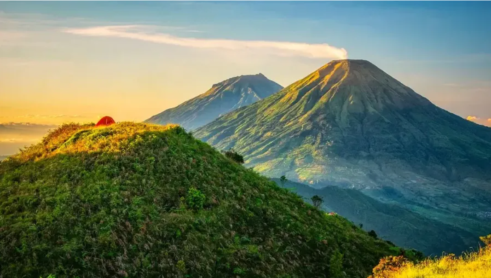
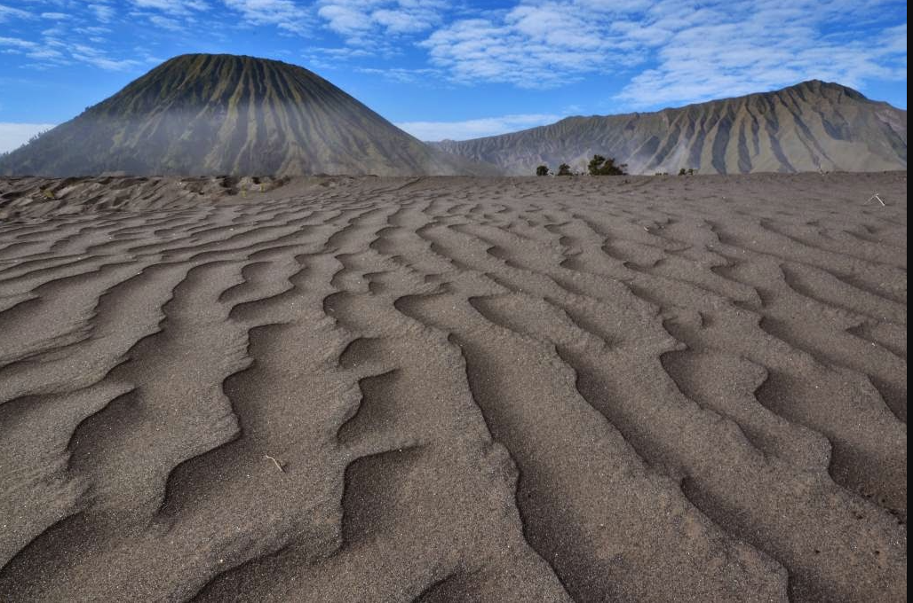
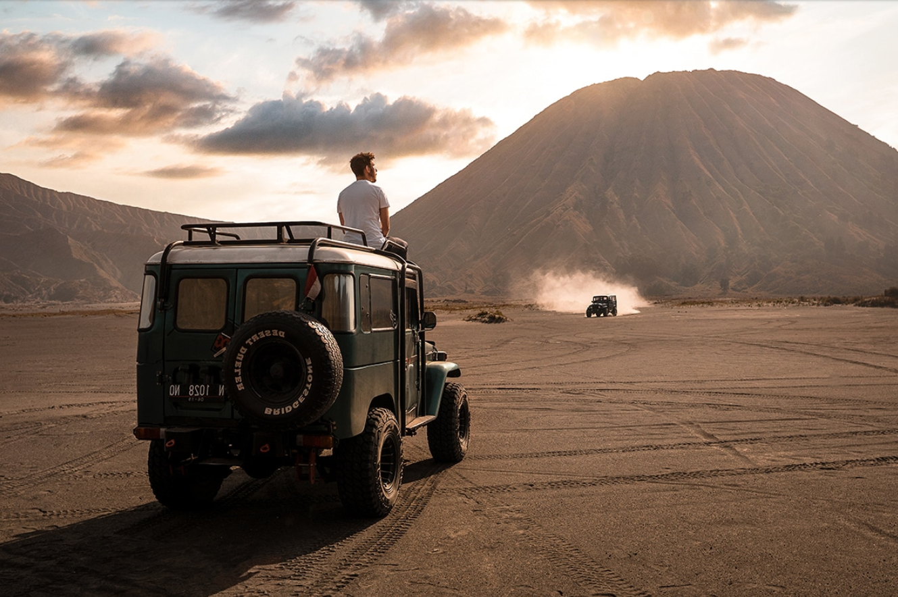

Mount
Bromo
.png)
Dari puncak Penanjakan, kabut tipis perlahan terangkat menyingkap megahnya Gunung Bromo dan Semeru yang berdiri kokoh di balik pendar cahaya keemasan. Momen matahari terbit di kawasan Kaldera Tengger bukan sekadar pemandangan visual, melainkan sebuah pengalaman spiritual yang memperlihatkan betapa megahnya kekuatan alam Jawa Timur.


Perjalanan belum lengkap tanpa melintasi Lautan Pasir (Pasir Berbisik) menuju kaki kawah Bromo. Pengunjung dapat memilih berjalan kaki atau menunggangi kuda milik warga lokal suku Tengger. Menaiki 250 anak tangga menuju bibir kawah aktif akan diganjar dengan gemuruh raungan perut bumi yang menakjubkan sekaligus mendebarkan.
Balutan pasir seluas lebih dari 5.200 hektar menjadikan kawasan Gunung Bromo salah satu lanskap vulkanik paling unik di dunia. Terbentuk dari letusan gunung purba ribuan tahun lalu, kaldera ini menciptakan hamparan laut pasir hitam yang dikelilingi tebing-tebing terjal. Berjalan di atas pasir halus sembari diapit angin dingin pegunungan memberikan sensasi seperti melangkah di permukaan planet lain.
Kawasan Bromo dapat diakses dengan mudah melalui jalur Probolinggo, Pasuruan, atau Malang. Sewa Jeep 4x4 lokal sangat disarankan untuk melintasi medan berpasir dan menanjak menuju titik View Point Penanjakan.
